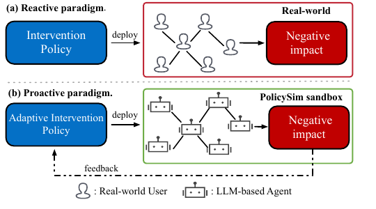
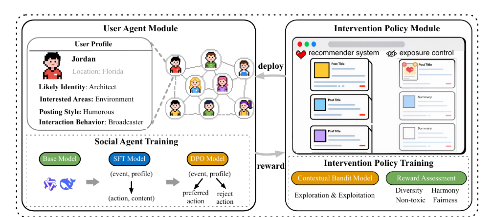

Profiles, memories, stance, behaviors, and evolving relations are used to simulate platform-specific users.通过用户画像、记忆、立场、行为和动态关系来模拟特定平台上的用户。
The ACM Web Conference 2026 · Dubai, United Arab Emirates ACM Web Conference 2026 · 迪拜，阿联酋 WWW Oral
PolicySim: An LLM-Based Agent Social Simulation Sandbox for Proactive Policy Optimization
A proactive simulation framework for evaluating social platform interventions before deployment. 一个用于在真实部署前评估和优化社交平台干预策略的主动式仿真框架。
Abstract摘要
Proactive policy optimization in a simulated social ecosystem.在仿真社交生态中主动优化平台策略。
PolicySim models the bidirectional dynamics between user behavior and platform interventions. It combines a user-agent module refined with SFT and DPO, and an adaptive intervention module based on contextual bandits with message passing. PolicySim 建模用户行为与平台干预策略之间的双向动态关系。框架包含经 SFT 与 DPO 优化的用户智能体模块，以及结合消息传递的上下文 bandit 自适应干预模块。
The goal is to evaluate intervention policies such as recommendation and exposure control before they are deployed to real users, reducing the risks of reactive A/B testing. 其目标是在推荐系统、曝光控制等策略上线前进行评估与优化，从而降低仅依赖真实用户 A/B 测试所带来的滞后性和潜在风险。
Motivation动机
From reactive A/B testing to proactive simulation.从被动 A/B 测试到主动仿真。
Figure 1 contrasts two evaluation paradigms. In standard A/B testing, a new intervention is deployed to real users first, and negative social effects are discovered only after outcomes are observed. Figure 1 对比了两种评估范式。 在传统 A/B 测试中，新的干预策略需要先部署到真实用户环境中，负面社会影响往往只能在结果发生之后被观察到。
PolicySim moves this feedback loop into a sandbox. The intervention policy is evaluated on LLM-based agents before deployment, so the platform can inspect risks, collect feedback, and optimize the policy without directly exposing real users to untested interventions. PolicySim 将这个反馈循环前移到仿真沙盒中。 干预策略先在 LLM 智能体环境中被评估，平台可以在真实上线前检查风险、收集反馈并优化策略，而不是直接让真实用户暴露在未验证的干预中。

| Method | Scale | Relation | IP. | AI. | Env. |
|---|---|---|---|---|---|
| PolicySim | 1000 | ✓ | ✓ | ✓ | X & Weibo |
| Oasis | 1M | ✓ | ✓ | ✗ | X & Reddit |
| Agent4rec | 1000 | ✓ | ✓ | ✗ | Movie Rec |
| HiSim | 700 | ✗ | ✗ | ✗ | X |
| Stopia | 2 | ✗ | ✗ | ✗ | - |
This is a comparison with existing simulation environments rather than an experiment result. PolicySim is the only listed framework that simultaneously supports evolving relations, explicit intervention policies, and adaptive intervention optimization. 这里展示的是与现有仿真环境的系统比较，而不是实验结果。PolicySim 是表中唯一同时支持动态关系、显式干预策略和自适应干预优化的框架。
Framework框架
Simulation sandbox framework.仿真沙盒框架。
PolicySim consists of two tightly coupled modules: a user agent module and an intervention policy module. Each agent is grounded in an authentic profile, maintains memory, updates stance over time, and performs social actions such as post, retweet, reply, follow, and unfollow. PolicySim 由两个紧密耦合的模块组成：用户智能体模块与干预策略模块。每个智能体基于真实用户画像，维护记忆，随轮次更新立场，并执行发帖、转发、回复、关注、取关等社交动作。
The platform module instantiates recommendation and exposure control. Sandbox reactions become reward signals for adaptive policy learning. 平台模块显式实例化推荐系统与曝光控制。沙盒中的反应会转化为自适应策略学习的奖励信号。
This separates behavioral realism from policy control: agents simulate users, while intervention modules determine what information is recommended, suppressed, or exposed. 这一设计区分了行为真实性与策略可控性：智能体模拟用户，干预模块决定信息如何被推荐、抑制或曝光。

SFT improves behavioral realism; DPO further aligns action preferences with observed social media behavior.SFT 提升行为真实性，DPO 进一步对齐真实社交媒体中的行动偏好。
A contextual bandit learns from sandbox rewards to optimize recommendation and exposure control policies.上下文 bandit 从沙盒奖励中学习，用于优化推荐和曝光控制策略。
Adaptive intervention policy自适应干预策略
Adaptive intervention is modeled as a contextual bandit. Recommendation arms correspond to user-post pairs, while exposure-control arms correspond to user-probability pairs. Rewards are tied to target outcomes such as cross-viewpoint interaction, low toxicity, and misinformation mitigation. 自适应干预被建模为上下文 bandit。推荐场景中的 arm 对应用户-帖子对，曝光控制场景中的 arm 对应用户-概率对。奖励与目标结果绑定，例如跨观点互动、低毒性和错误信息抑制。
Experiments实验
Metrics and micro-level simulation results.实验指标与微观仿真实验结果。
Simulation quality is evaluated from both micro and macro perspectives. At the micro level, the evaluation measures content quality, behavior alignment, self-consistency, and social capability. 仿真质量从微观和宏观两个层面进行评估。在微观层面，评估内容包括内容质量、行为对齐、自一致性以及社会交互能力。
The table below focuses on whether an individual agent can write like a real user, choose realistic actions, and participate naturally in social contexts. 下表关注单个智能体是否能像真实用户一样写作、选择合理行为，并自然参与社交语境。
- Content quality: BERTScore F1 and BertSim evaluate whether generated posts resemble real user posts semantically and lexically.内容质量： 使用 BERTScore F1 和 BertSim 衡量生成内容与真实用户帖子在语义与文本层面的相似性。
- Behavior alignment: accuracy of replicating human-like actions such as posting or retweeting.行为对齐： 衡量智能体是否能复现类似真人的发帖、转发等行为选择。
- Self-consistency: whether the agent can correctly identify its own generated content.自一致性： 衡量智能体生成内容与其内部行为偏好是否一致。
- Social capability: LLM-as-a-Judge scores for engagement, robustness, and suitability.社会交互能力： 通过 LLM-as-a-Judge 评估参与度、鲁棒性与整体适用性。
| Method | BERTScore F1 ↑ | BertSim ↑ | Behavior Acc. ↑ | Self Acc. ↑ | Engagement ↑ | Robustness ↑ | Suitability ↑ |
|---|---|---|---|---|---|---|---|
| Random | 28.55 ±4.18 | 74.42 ±12.08 | 36.11 ±25.30 | 21.20 ±1.65 | 2.65 ±0.55 | 2.31 ±0.54 | 2.11 ±0.14 |
| GLM4-light | 46.01 ±10.35 | 81.95 ±13.64 | 48.33 ±27.64 | 47.20 ±27.64 | 2.91 ±0.40 | 2.70 ±0.57 | 57.64 ±0.50 |
| Llama-3-8B-Instruct | 46.32 ±13.07 | 85.22 ±6.81 | 52.36 ±26.21 | 45.60 ±25.95 | 3.16 ±0.49 | 3.51 ±0.50 | 71.85 ±0.45 |
| Qwen2.5-0.5B-Instruct | 46.64 ±23.99 | 81.38 ±9.03 | 47.78 ±22.74 | 24.30 ±19.52 | 2.95 ±0.45 | 2.43 ±0.57 | 47.22 ±0.50 |
| Qwen2.5-3B-Instruct | 48.26 ±12.57 | 85.91 ±6.35 | 60.56 ±26.87 | 40.40 ±26.98 | 3.17 ±0.47 | 2.65 ±0.61 | 52.41 ±0.50 |
| Qwen2.5-7B-Instruct | 49.48 ±11.77 | 85.52 ±6.63 | 50.56 ±25.60 | 51.20 ±29.98 | 3.29 ±0.47 | 2.71 ±0.61 | 63.83 ±0.48 |
| PolicySim-φ | 45.16 ±14.91 | 80.15 ±8.23 | 58.33 ±29.95 | 27.20 ±21.82 | 3.04 ±0.42 | 2.52 ±0.57 | 55.17 ±0.50 |
| PolicySim-SFT | 52.66 ±15.53 | 86.77 ±7.55 | 54.44 ±22.91 | 56.40 ±25.83 | 3.00 ±0.42 | 2.42 ±0.53 | 44.83 ±0.50 |
| PolicySim-DPO | 47.95 ±13.24 | 83.20 ±8.13 | 53.89 ±24.41 | 50.40 ±25.37 | 3.14 ±0.47 | 2.67 ±0.58 | 61.27 ±0.49 |
| PolicySim | 58.05 ±15.96 | 88.06 ±6.32 | 65.56 ±19.71 | 56.00 ±25.61 | 3.20 ±0.44 | 2.73 ±0.61 | 59.44 ±0.49 |
Values are averaged over five runs with standard deviations. Higher is better for all reported metrics. 所有结果为五次运行的平均值及标准差。表中指标均为数值越高越好。
Adaptive intervention results自适应干预结果
The second evaluation asks whether sandbox feedback can improve intervention policies. Objective 1 promotes cross-viewpoint interactions while keeping toxicity low; Objective 2 controls exposure to reduce misinformation propagation. 第二组评估关注沙盒反馈是否能真正优化干预策略。目标 1 在保持低毒性的同时促进跨观点互动；目标 2 通过曝光控制降低错误信息传播比例。
| Method | Objective 1 | Objective 2 | ||
|---|---|---|---|---|
| Stance | Toxicity ↓ | Cross interactions ↑ | Misinformation ratio ↓ | |
| Origin | 0.014 (0.37) | 0.0556 | 0.04 | 40% |
| ε-greedy | 0.184 (0.42) | 0.0426 | 0.14 | 26% |
| UCB | 0.026 (0.34) | 0.0628 | 0.50 | 30% |
| PolicySim | 0.376 (0.48) | 0.0386 | 0.56 | 24% |
PolicySim increases cross-viewpoint interactions, keeps toxicity lowest among the listed methods, and reduces misinformation propagation to the lowest ratio. PolicySim 提升了跨观点互动比例，在列出的策略中保持最低毒性，并将错误信息传播比例降到最低。
Citation引用
BibTeXBibTeX
@inproceedings{huang2026policysim,
title = {PolicySim: An LLM-Based Agent Social Simulation Sandbox for Proactive Policy Optimization},
author = {Huang, Renhong and Tang, Ning and Xu, Jiarong and Cao, Yuxuan and Tu, Qingqian and Guo, Sheng and Zheng, Bo and Liu, Huiyuan and Yang, Yang},
booktitle = {Proceedings of the ACM Web Conference 2026},
year = {2026},
doi = {10.1145/3774904.3792555}
}